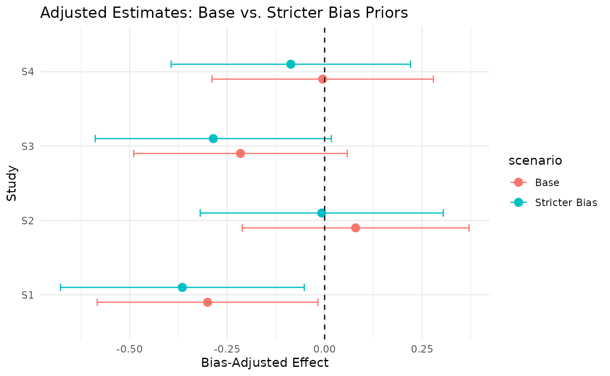

Sensitivity Analyses in Triangulate
Source:vignettes/articles/sensitivity-analysis.Rmd
sensitivity-analysis.RmdIntroduction
This article demonstrates how to conduct simple sensitivity analyses using the triangulate package. We will explore how changes in bias priors influence the resulting adjusted estimates, allowing us to assess how sensitive bias-adjusted results are to different assumptions.
We use a manually-created, simplified version of the CHD dataset, examining how different assumptions affect the pooled results.
Create example dataset
We define a small synthetic dataset mimicking studies with moderate bias and indirectness.
Define Default Bias and Indirectness Priors
We apply “moderate” priors for all studies, similar to a base-case analysis.
# assumptions about additive and proportional bias, each with some uncertainty
bias_priors <- example_data %>%
mutate(
domain = "all",
j = "moderate",
bias_m_add = 0.1,
bias_v_add = 0.05,
bias_m_prop = 0.1,
bias_v_prop = 0.02,
type = "RCT" # or whatever design you want
)
indirectness_priors <- tibble(
result_id = example_data$result_id,
domain = "all",
j = "moderate",
ind_m_add = 0.05,
ind_v_add = 0.03,
ind_m_prop = 0.05,
ind_v_prop = 0.02
)Run bias adjustment
We use tri_prep_data() and tri_calculate_adjusted_estimates() to get bias-adjusted effect sizes.
# this is where we combine the bias/indirectness priors with the study results and adjusts yi and vi to get new columns yi_adj and vi_adj for the adjusted estimate and varainces, respectively
base_prepped <- tri_prep_data(bias_priors, indirectness_priors)
base_adjusted <- tri_calculate_adjusted_estimates(base_prepped)
base_adjusted %>%
select(result_id, yi, yi_adj, vi, vi_adj)
#> # A tibble: 4 × 5
#> result_id yi yi_adj vi vi_adj
#> <chr> <dbl> <dbl> <dbl> <dbl>
#> 1 S1 -0.2 -0.300 0.02 0.0801
#> 2 S2 0.25 0.0795 0.03 0.0845
#> 3 S3 -0.1 -0.216 0.015 0.0749
#> 4 S4 0.15 -0.00490 0.025 0.0806Stricter sensitivity scenario
We now increase the additive and proportional bias priors to simulate a more conservative scenario.
# represents a stricter assumption e.g if the bias was worse than originally thought. same process applied as before but with new priors
sensitive_bias <- bias_priors %>%
mutate(
bias_m_add = 0.2,
bias_v_add = 0.08,
bias_m_prop = 0.15,
bias_v_prop = 0.04
)
sensitive_prepped <- tri_prep_data(sensitive_bias, indirectness_priors)
sensitive_adjusted <- tri_calculate_adjusted_estimates(sensitive_prepped)
sensitive_adjusted %>%
select(result_id, yi, yi_adj, vi, vi_adj)
#> # A tibble: 4 × 5
#> result_id yi yi_adj vi vi_adj
#> <chr> <dbl> <dbl> <dbl> <dbl>
#> 1 S1 -0.2 -0.365 0.02 0.0977
#> 2 S2 0.25 -0.00736 0.03 0.0972
#> 3 S3 -0.1 -0.285 0.015 0.0917
#> 4 S4 0.15 -0.0868 0.025 0.0942compare results
We plot the adjusted effect estimates under both scenarios.
# overlays the 2 scenarios to visually represent how the priors affect the estimated effect
comparison <- bind_rows(
base_adjusted %>% mutate(scenario = "Base"),
sensitive_adjusted %>% mutate(scenario = "Stricter Bias")
) %>%
mutate(result_id = factor(result_id, levels = paste0("S", 1:4))) # or use your preferred order
ggplot(comparison, aes(y = result_id, x = yi_adj, color = scenario)) +
geom_point(position = position_dodge(0.4), size = 3) +
geom_errorbarh(
aes(xmin = yi_adj - sqrt(vi_adj), xmax = yi_adj + sqrt(vi_adj)),
height = 0.2,
position = position_dodge(0.4)
) +
geom_vline(xintercept = 0, linetype = "dashed") +
labs(
title = "Adjusted Estimates: Base vs. Stricter Bias Priors",
x = "Bias-Adjusted Effect", # now horizontal axis
y = "Study" # now vertical axis
) +
theme_minimal()
#> Warning: `geom_errorbarh()` was deprecated in ggplot2 4.0.0.
#> ℹ Please use the `orientation` argument of `geom_errorbar()` instead.
#> This warning is displayed once every 8 hours.
#> Call `lifecycle::last_lifecycle_warnings()` to see where this warning was
#> generated.
#> `height` was translated to `width`.
conclusion
This vignette illustrates how small changes in prior assumptions can impact adjusted effect estimates. While triangulate doesn’t yet include a built-in sensitivity function, this process can be easily scripted for exploring model robustness.
Note that the echo = FALSE parameter was added to the
code chunk to prevent printing of the R code that generated the
plot.